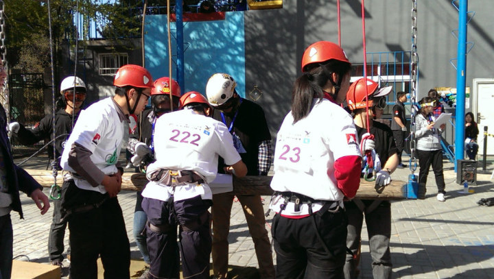
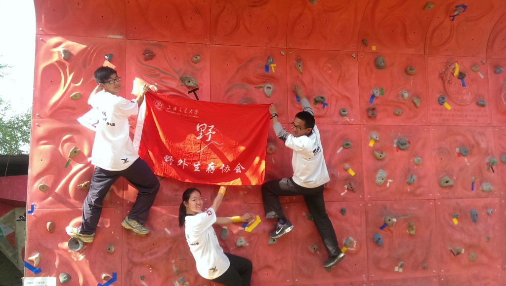
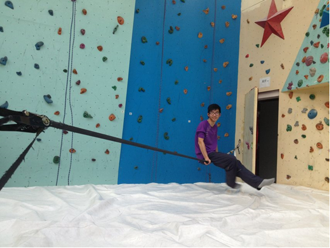
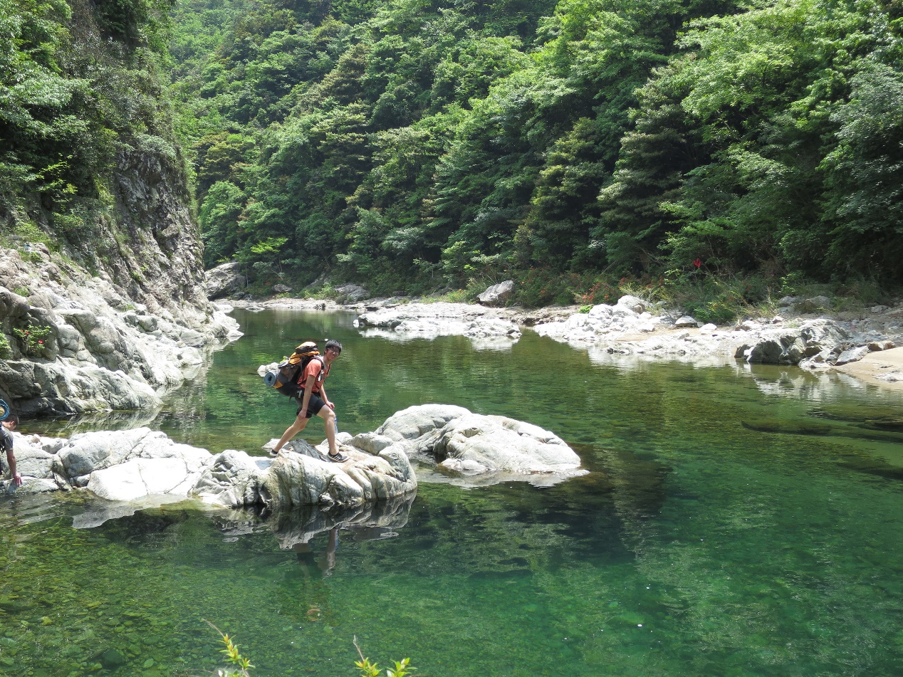
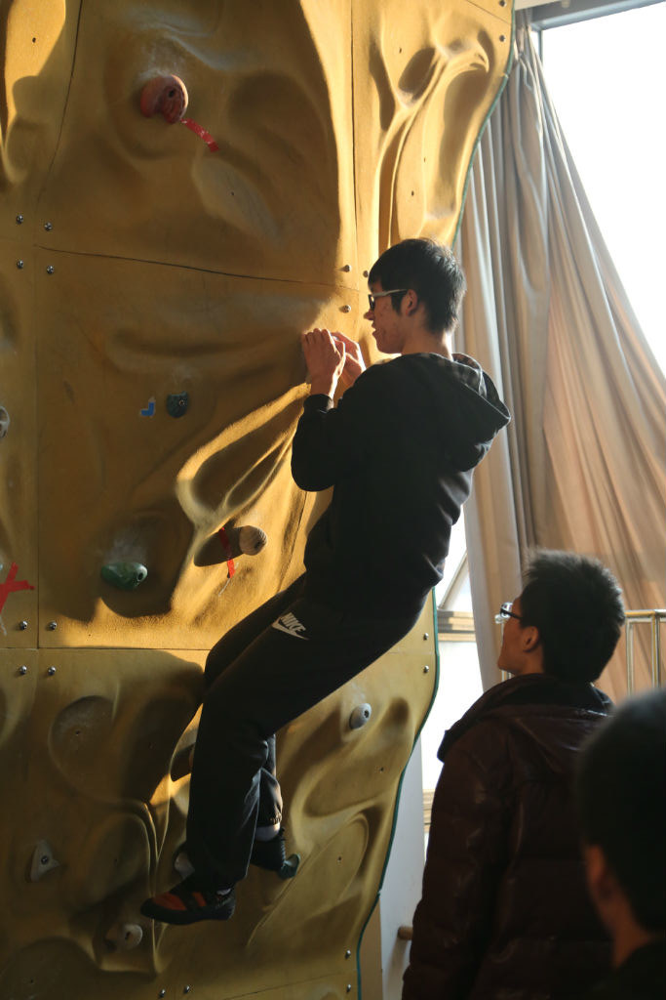
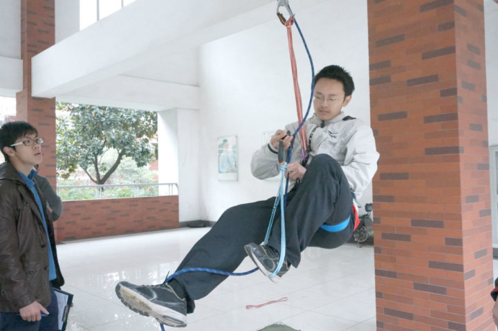
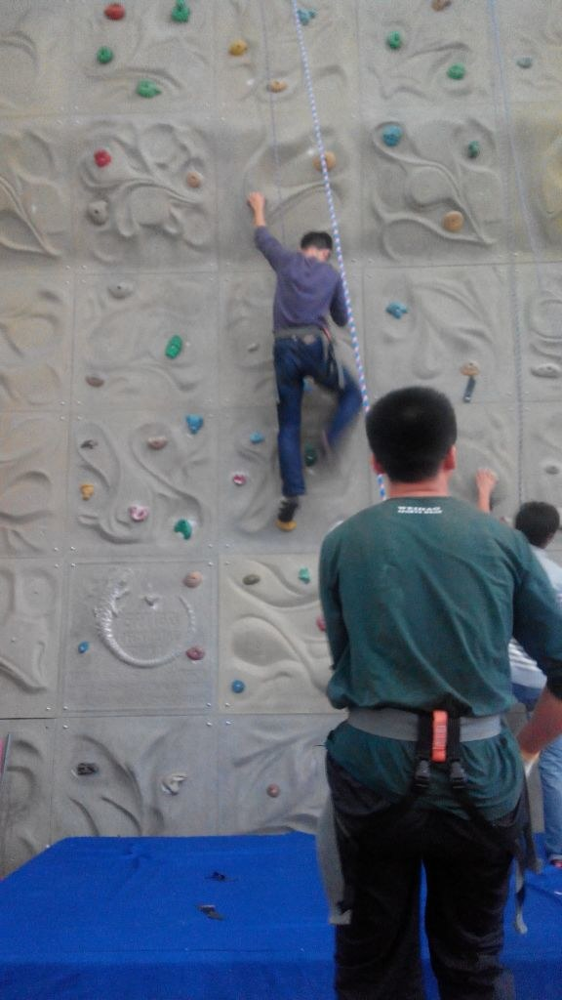

发信人: BeatboxST (ST), 信区: outdoor
标 题: 【野协团爆】【第三弹】攀岩队
发信站: 饮水思源 (2014年06月06日03:10:31 星期五)
【攀岩队】
队长：余文澜
副队长：陈师伟
大家好我是攀岩队队长啦……我叫余文澜……在野协已经摸爬滚打了一年啦……各方面的技术还算凑合……野协真的是一个很好的交流平台啦总之一句野协威武！……
 screen.width - 200){this.width = screen.width - 200}">
北大比赛的照片，是背影……真是经典而又难忘的参赛号码……
 screen.width - 200){this.width = screen.width - 200}">
终于有张算是露脸的照片了……
 screen.width - 200){this.width = screen.width - 200}">
货真价实的正脸……9A岩馆的扁带……
陈师伟
 screen.width - 200){this.width = screen.width - 200}">
被杆菌（王黑黑）带进后勤部，认识了好多老人，新朋友，我最喜欢的社团就是野协了。
爱电影，爱动漫，爱汽车，爱健身，爱疯爱闹爱掉节操，不是基佬（=_=）
我很腼腆的，平时不轻易显露本性。
作为攀岩队副队当然要宣传一下我们攀岩队了，攀岩是很好玩的运动，又能健身又能玩，
欢迎大家和我们一起去攀岩！
 screen.width - 200){this.width = screen.width - 200}">
黄立为（船建学院）
喜欢：自行车 游泳 暴走大事件 水群 我是世界三大水比之首 不服的可以到群里来战
往事如烟过 一笑泯恩仇 师妹成人妻 绿帽心中留
攀岩队什么的最有（wu）爱（qu）了哈哈哈 爆照什么的最无聊了这尼玛写点什么呢据说要
一百字才行啊卧槽为何这么坑爹卧槽到100字了哈哈拜拜
 screen.width - 200){this.width = screen.width - 200}">
screen.width - 200){this.width = screen.width - 200}">
张弛
找照片总是件很艰辛的事TAT，最终还是在神奇的人人上找到了唯一的一张，还是个背影。
。。
 screen.width - 200){this.width = screen.width - 200}">
--
※ 来源:·饮水思源 bbs.sjtu.edu.cn·[FROM: 10.184.129.219]
※ 修改:·BeatboxST 于 2014年06月06日03:10:46 修改本文·[FROM: 10.184.129.219]
※ 修改:·BeatboxST 于 2014年06月06日03:11:00 修改本文·[FROM: 10.184.129.219]
※ 修改:·BeatboxST 于 2014年06月06日03:11:24 修改本文·[FROM: 10.184.129.219]
※ 修改:·BeatboxST 于 2014年06月06日03:11:40 修改本文·[FROM: 10.184.129.219]
|